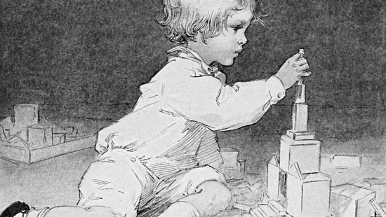

As Johan Huizinga wrote in his 1938 book, "Homo Ludens", play is a crucial part of human culture and influences how we develop as a society. Play is not just for fun, but affects many areas of our lives like language, art, and religion. This concept has inspired researchers to study the role of play in various fields, and the idea of becoming a Homo Ludens has become more important than ever.

About Johan Huizinga
Johan Huizinga (1872-1945) was a Dutch historian and cultural theorist. He is best known for his book "Homo Ludens", which explores the role of play in human culture and society. In the book, Huizinga argues that play is not just a leisure activity, but a fundamental aspect of human nature that influences language, art, and religion.
Born in Groningen, the Netherlands, Huizinga studied classics and history at the University of Groningen. He later became a professor of history at the University of Leiden. Huizinga's work was influential in the development of cultural history and continues to be studied and discussed today.

Click to buy "Homo Ludens:
A
Study of the Play Element in
Culture" on Amazon
*Note: This is an Amazon affiliated link, which means I may earn a commission if you click
through and make a purchase.